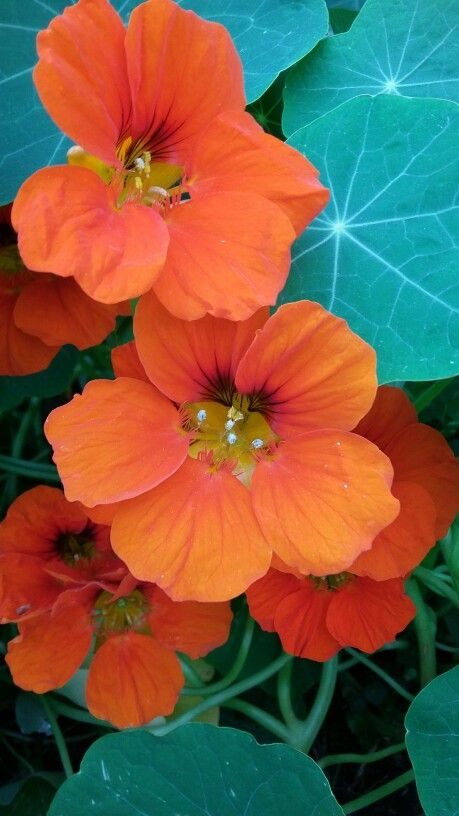

Se le conoce también como “capucha de monje” por la forma que tienen sus flores. En las casas, se debe sembrar la capuchina en espacios abiertos. Además, es útil para repeler las plagas que afectan a los animales domésticos.
Tiene un aroma suave y fresco, ligeramente herbal.
Necesita bastante luz para florecer abundantemente.
Se recomienda de 4 a 6 horas de sol directo al día.
Riego moderado, manteniendo la tierra ligeramente húmeda.
En climas muy cálidos puede necesitar agua más frecuente.
Evitar exceso de fertilizante, ya que puede producir muchas hojas y pocas flores.
Retirar hojas o flores secas para estimular el crecimiento.
La poda ligera ayuda a controlar su tamaño y forma.
La Capuchina es una planta comestible; sus flores y hojas pueden usarse en ensaladas.
También ayuda a atraer polinizadores como abejas y mariposas.